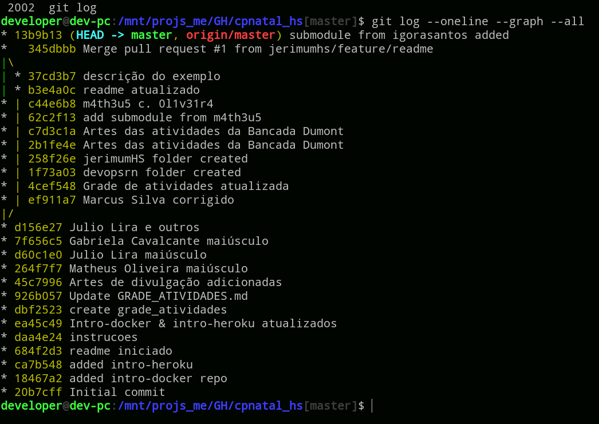

Git básico e alguns serviços
O que é
- Controle de versionamento
- Monitora arquivos
Versiona o que?
- Conteúdo
- Quem
- Quando / história dos arquivos
Vantagens
- Arquiva informação
- Possibilidade de "voltar" versões
- Trabalho em equipe organizado
- Possibilidade de colaborar em grandes projetos
- Muitos serviços de TI o usa
Desvantagens
- Dificuldade inicial
- Risco do usuário "quebrar" a árvore
- Falta de padronização da equipe
Pra quem?
- Programadores (serviços / FOSS / CV)
- Designers (artes vetoriais)
- Professores (disciplinas e coding challenges)
- Pesquisadores (relatórios acadêmicos)
- Escritores (livros)
- Empresas (hiring challenges)
- Advogados e governos
- ...
é
pra
todo
mundo!
Como funciona
Workspace • Staging Area • Local Repo
• Remote Repo
Como funciona

Como funciona


Como funciona

Como funciona

Como funciona

Softwares de Git
"Lado cliente"
CLI: Command Line Interface
Softwares de Git - CLI
Softwares de Git
"Lado cliente"
GUI: Graphical User Interface
Serviços de Git
"Lado servidor"